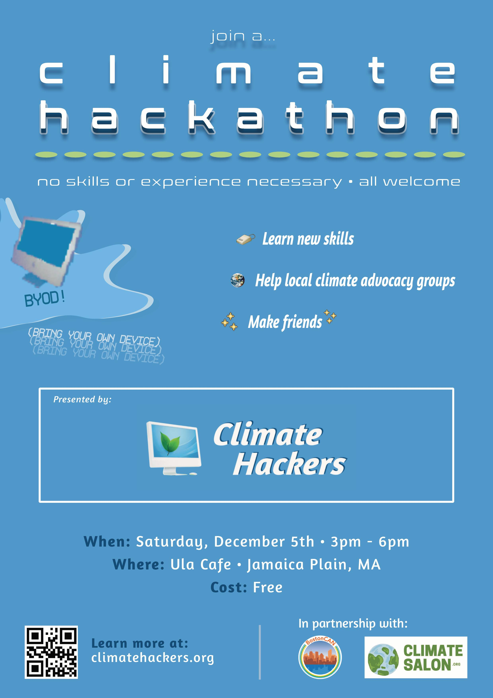

Climate Hackers
Climate Hackers
A monthly hackathon for building and collaborating on climate-oriented projects.
Join Our First Event!
Our first hackathon meetup will be on Saturday, December 5th at Ula Cafe in Jamaica Plain from 3-6pm! Sign up here.

Join Our First Event!
We are pleased to announce that we will be partnering with Boston Climate Action Network to provide a real-life, concrete set of topic tracks for those wanting to come hack but unsure of what to work on.
Event Details
- When:
- December 5th, 2026. 3-6pm.
- Cost:
- Free (though donations and support for the cafe are welcome)
- Who:
- Anyone in the Boston area who wants to work with like-minded folks to build solutions for a greener future. No skills or experience required.
Tell a friend! Sign up here.
Overview
Climate Hackers is a Boston-based hackathon series for anyone who is climate-curious, wants to build practical solutions for a greener future, or is looking for community and collaboration amongst fellow climate-conscious individuals.
Who is this for?
The event is open to anyone with an interest and motivation to collaborate to build climate solutions.
Whether you are a professional, student, retiree, or someone who simply cares about the environment and has skills and ideas to offer, you are welcome. No climate or tech experience required.
- You do not have to know how to code or work in tech to attend
- No prior experience necessary
- All ages, genders, ethnicities, religions, beliefs, and backgrounds are invited
Guiding Principles
We aim to strive for a set of guiding principles to ground our work in intentionality, community, and collaboration.
- Focus on building long-term, cross-disciplinary projects and collaborations
- Focus on local, grassroots communities and solutions (where possible)
- Create space for climate-conscious and climate-curious individuals in the Boston-area to come together in collaboration
Topics & Tracks
Each month we will partner with a local climate or environmental advocacy group to offer a set of central topics and themes to explore and try to work towards. Attendees may also come with their own ideas and ongoing projects.
Any topic related to climate-adjacent problems is welcome, though here are some potential starting points to explore. This list is subject to change.
- Clean energy & energy data
- Supporting existing grassroots non-profit climate orgs in the region
- Environmental justice
- Municipal open data (e.g. City of Boston, Mass DOT)
- Permacomputing (hardware)
- Solar + solar-powered IoT & devices (e.g. balcony solar, solar powerbanks, etc.)
- Zero-waste
- Ocean tech
- Local gov't initiative exploration (e.g. BERDO, MassSave)
- Urban gardening, food justice
- Public transit/transportation
- Urban flora & fauna
- Climate education
- Solarpunk (art, literature, aesthetics)
Projects
Here are a few sample projects in various states of completion done by Climate Hackers members or friends. As we're just getting started, expect our list to grow over time.
FAQs
Are there judges & winners?
For this hackathon, there are no judges or winners. The goal is to collectively build a set of tools to support local climate initiatives.
How long will it be?
Roughly 4hrs. Details to be confirmed.
Will there be a prize?
As of now, there is no physical prize. The prize is the friendship made along the way :)
How do I prepare?
Come prepared with ideas, an open mind, and a collaborative spirit. No other experience required.
What kind of skills are required?
Any domain expertise is accepted. Whether you're an engineer, designer, founder, writer, gardener, or student - as long as you have ideas to offer and a desire to help you are welcome.
What kinds of projects will be worked on?
Per the nature of a hackathon, most projects may be software oriented. There is no limitation, however, and we will expand on this in the future.
I have a question that's not listed here.
Get in touch! We are a small team building this as we go and are always open to ideas.
Join the Climate Hackers community
Interested? Use any of the links below to get involved and stay up to date on our latest events, news & projects.
- Join the email list
- Follow us on social media: Instagram
- Join the Discord server: https://discord.gg/mVHPmAPWE9
- Questions? Get in touch via email
About / Meet the Team
Climate Hackers is an initiative put together by Esra Eisa and Ben Aronson.
Get in touch with us at the links above! We are just starting Climate Hackers and would love to connect. :)